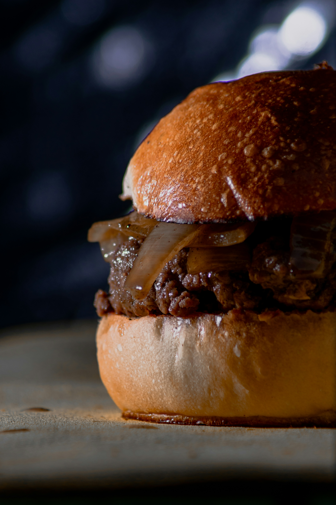

Classic Cheeseburger

Ingredients:
- 1 pound ground beef
- 4 hamburger buns
- 4 slices cheddar cheese
- 1 tomato, sliced
- 1 onion, sliced
- Lettuce leaves
- Pickles
- Ketchup
- Mustard
- Salt and pepper to taste
Instructions:
- Divide the ground beef into 4 equal portions and shape each into a patty.
- Season the patties with salt and pepper on both sides.
- Heat a grill or skillet over medium-high heat. Cook the patties for 4-5 minutes on each side, or until cooked to your desired level of doneness.
- While the patties are cooking, toast the hamburger buns on the grill or in a toaster.
- Once the patties are cooked, place a slice of cheese on each patty and allow it to melt slightly.
- Assemble the burgers by placing lettuce leaves on the bottom half of each bun, followed by a cheese-topped patty, tomato slices, onion slices, and pickles.
- Spread ketchup and mustard on the top half of each bun, then place it on top of the burger.
- Serve hot and enjoy this classic favorite!